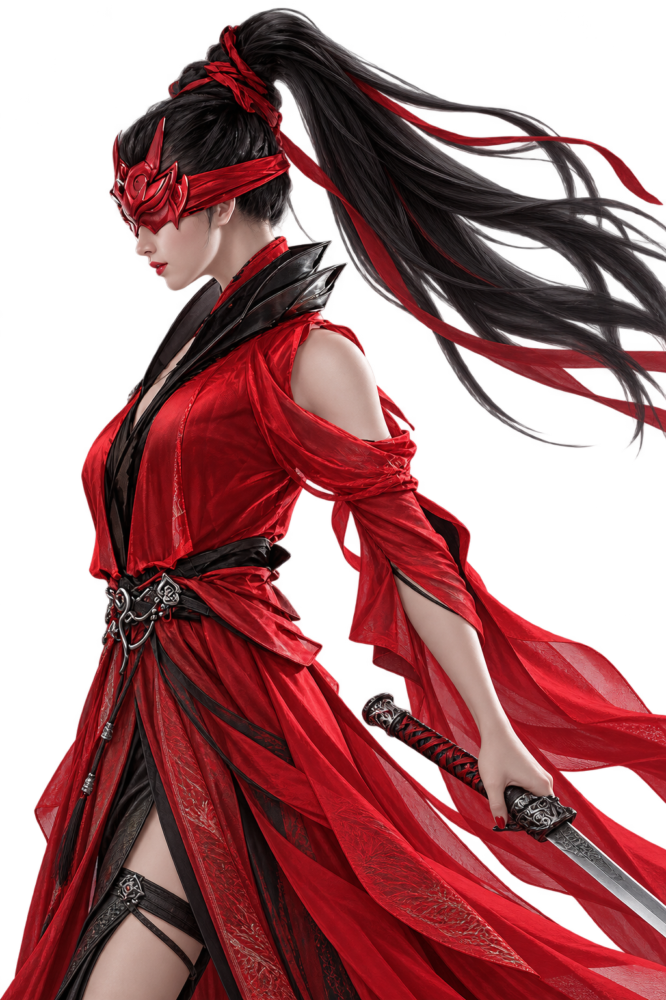
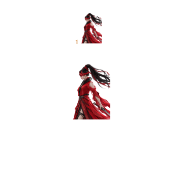
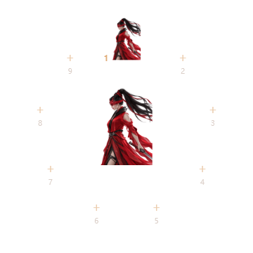
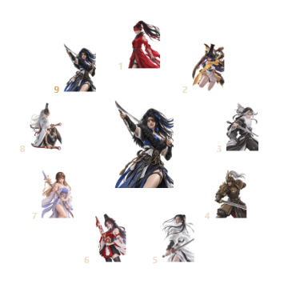
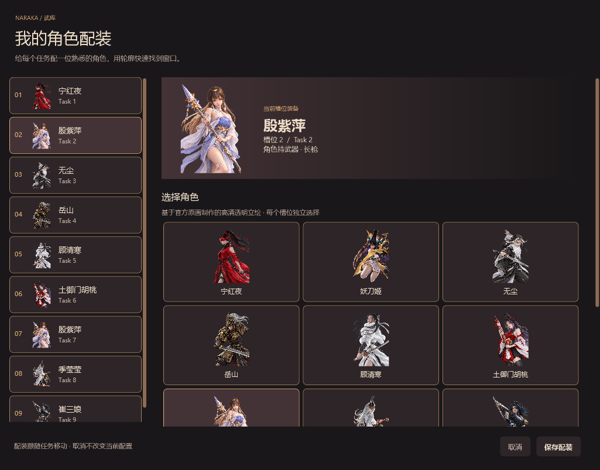

九张 1024 × 1536 透明立绘。常驻角色去掉圆圈与底板；空槽平时隐藏，拖入窗口时才显示添加落点。任务位置和快捷键编号保持固定。


空槽透明，不接住误点。中央是当前角色，上方是编号 1 的任务。

只有编号与「＋」，不放空武器。添加后沿用该编号。

此图使用九个测试任务，便于检查位置和轮廓。
基于官方原画，经内置 imagegen 编辑制作的衍生透明立绘。点击角色直接查看 1024 × 1536 源 PNG。

右键槽位 →「更换角色 / 配装…」。自定义图片、配装保存和任务移动沿用原有逻辑。
素材路径、提示词、来源与操作说明 · 验证摘要 · 未打包